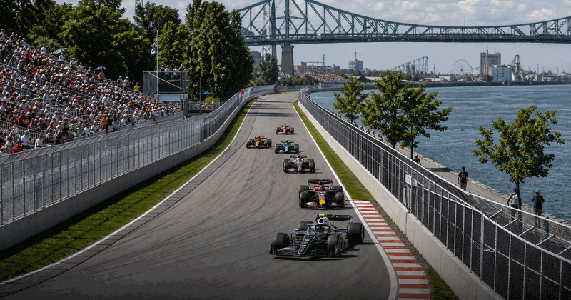
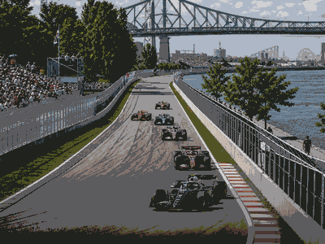

Formula 1 event guide
Canadian Grand Prix
First race1961
CircuitGilles Villeneuve
Top Canadian GP winners
1 GermanyMichael Schumacher
GermanyMichael Schumacher
7
2 United KingdomLewis Hamilton
United KingdomLewis Hamilton
7
3 BrazilNelson Piquet
BrazilNelson Piquet
3
4 NetherlandsMax Verstappen
NetherlandsMax Verstappen
3

More Formula 1 Formula 1 topicMore races, circuits and calendar moments.